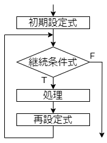
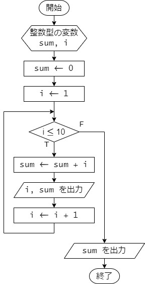
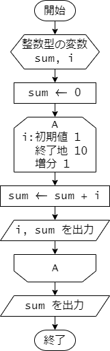
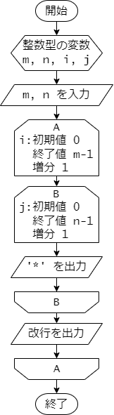
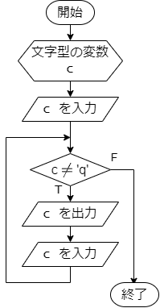
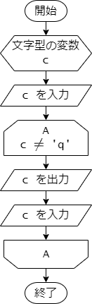
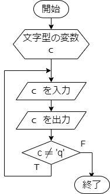
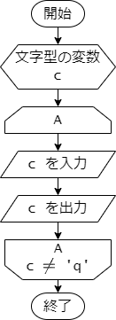

第 7 章 : 繰り返し処理
7.1 : for 文
例題 7-1 : for 文
for 文は、繰り返し処理を行うための文です。 決まった回数の繰り返し処理を行う場合によく利用されます。
次のプログラムは、for 文を利用して 1 から 10 までの整数の和を 途中の計算結果を表示しながら求めるプログラムです。
sum.c
#include <stdio.h>
int main(void) {
int sum = 0;
int i;
for (i = 1; i <= 10; i++) {
sum += i;
printf("i = %d, sum = %d\n", i, sum);
}
printf("sum = %d\n", sum);
return 0;
}
for 文の書式は次の通りです。
for (初期設定式; 継続条件式; 再設定式) {
処理
}
for 文の実行の流れは次のフローチャートの通りです。

まず初めに、初期設定式が実行されます。 次に継続条件式が評価され、真であれば処理と再設定式が実行されます。 その後再び継続条件式が評価されます。 継続条件式が真となるあいだは、処理と再設定式が繰り返し実行されます。 継続条件式が偽となると、for 文の実行を終了します。
例題のプログラム sum.c では、
初期設定式、継続条件式、再設定式、処理の部分はそれぞれ次のようになります。
- 初期設定式 :
i = 1 - 継続条件式 :
i <= 10 - 再設定式 :
i++ - 処理 :
sum += i; printf("i = %d, sum = %d\n", i, sum);
プログラム全体の処理の流れを示したフローチャートは次のようになります。 for 文の初期設定式、継続条件式、再設定式、処理の部分がそれぞれフローチャートの どこに対応するかを確認してください。

実行結果は次の通りです。
terminal (実行結果)
i = 1, sum = 1
i = 2, sum = 3
i = 3, sum = 6
i = 4, sum = 10
i = 5, sum = 15
i = 6, sum = 21
i = 7, sum = 28
i = 8, sum = 36
i = 9, sum = 45
i = 10, sum = 55
sum = 55
なお、このプログラムのフローチャートは、ループ端記号を用いて 次のように表すこともできます。

例題 7-2 : 二重ループ
for 文の処理の中でさらに for 文を利用することで、 いわゆる二重ループを実現することができます。
次のプログラムは、for文による二重ループを利用して、
正の整数 m, n を入力すると、m 行 n 列の * で作られた
長方形を表示するプログラムです。
rectangle.c
#include <stdio.h>
int main(void) {
int n, m;
int i, j;
scanf("%d %d", &m, &n);
for (i = 0; i < m; i++) {
for (j = 0; j < n; j++) {
printf("*");
}
printf("\n");
}
return 0;
}
プログラムの処理の流れを示したフローチャートは次のようになります。

外側のループ(A) は、m 行の長方形を作るためのループです。
内側のループ(B) は、各行ごとに n 個の * を描画するためのループです。
内側のループ(B) が終了すると、改行を出力して、次の行に移ります。
実行結果は次の通りです。
1行目は m と n を入力しています。
ここでは m = 4, n = 7 としています。
2 行目以降に、4 行 7 列の長方形が表示されています。
terminal (実行結果)
4 7
*******
*******
*******
*******
7.2 : while 文
例題 7-3 : while 文
while 文は、ある条件が真である間、処理を繰り返し行うときに利用します。
次のプログラムは、while 文を利用して、キーボードから q が入力されるまで、
入力された文字を表示するプログラムです。
echo.c
#include <stdio.h>
int main(void) {
char c;
scanf(" %c", &c); // " %c" スペースを入れると、空白文字を読み飛ばすことができる
while (c != 'q') {
printf("input character : %c\n", c);
scanf(" %c", &c);
}
return 0;
}
while 文の書式は次の通りです。
while (継続条件式) {
処理
}
while 文では、はじめに継続条件式が評価されます。 継続条件式が真であれば処理が実行されます。 その後再び継続条件式が評価されます。 継続条件式が偽となると、while 文の実行を終了します。
例題のプログラム echo.c の継続条件式は c != 'q' です。
ですので、char 型の変数 c が 'q' でない限り、処理が繰り返し実行されます。
プログラム全体の処理の流れを示したフローチャートは次のようになります。

このフローチャートは、ループ端記号を用いて次のようにも表すことができます。

プログラムの実行例を示します。
1, 3, 5 行目は、キーボードからの入力を示しています。
a や 3 が入力されたときは、while 文の処理が実行され、
input character : a や input character : 3 が表示されています。
q が入力されると、while 文の処理が実行されず、プログラムが終了します。
terminal (実行結果1)
a
input character : a
3
input character : 3
q
別の実行例を示します。
1 行目は、キーボードからの入力を示しています。
はじめに q が入力されると、while 文の処理が実行されず、プログラムが終了します。
terminal (実行結果2)
q
7.3 : do-while 文
例題 7-4 : do-while 文
do-while 文は while 文と同様に、ある条件が真である間、処理を繰り返し行うときに利用します。 ただし、while 文とは処理の流れが若干異なります。
次のプログラムは、do-while 文を利用して、キーボードから q が入力されるまで、
入力された文字を表示するプログラムです。
echo_do_while.c
#include <stdio.h>
int main(void) {
char c;
do {
scanf(" %c", &c);
printf("input character : %c\n", c);
} while (c != 'q');
return 0;
}
do-while 文の書式は次の通りです。
do {
処理
} while (継続条件式);
while 文と異なる点は、はじめに処理が実行され、その後継続条件式が評価される点です。 継続条件式が真であれば処理が再び実行されます。 継続条件式が偽となると、do-while 文の実行を終了します。
例題のプログラム echo_do_while.c の継続条件式は c != 'q' です。
プログラム全体の処理の流れを示したフローチャートは次のようになります。

ループ端記号を用いて次のようにも表すことができます。

プログラムの実行例を示します。
1, 3, 5 行目は、キーボードからの入力を示しています。
a や 3 が入力されたときは、繰り返しの処理が実行され、
input character : a や input character : 3 が表示されています。
q が入力された場合でも、繰り返しの処理が実行され
input character : q が表示されますが、
その後は継続条件式が偽となり、プログラムが終了します。
terminal (実行結果1)
a
input character : a
3
input character : 3
q
input character : q
別の実行例を示します。
1 行目は、キーボードからの入力を示しています。
はじめに q を入力した場合でも、do-while 文の処理が実行され、
input character : q が表示されます。
もちろん、その後は継続条件式が偽となり、プログラムが終了します。
terminal (実行結果2)
q
input character : q
演習
演習 7-1
正の整数値 n を入力すると、以下の実行例のように、
高さ n 幅 n の直角三角形の領域を文字 * で描画するプログラムを作成してください。
実行例を示します。 1 行目は、ユーザーからの n の値の入力を示しています。
terminal (実行結果)
6
*
**
***
****
*****
******